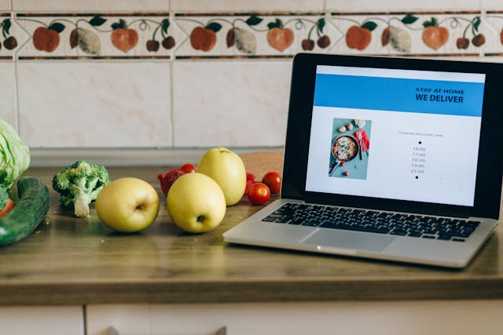
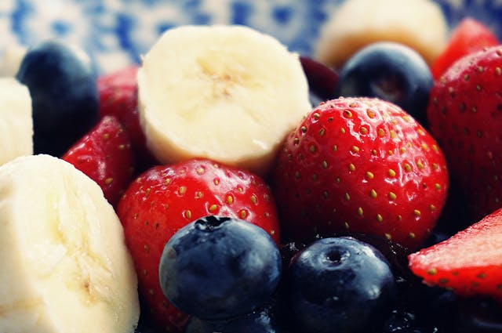

This website is awesome
This website has some subtext that goes here under
the main title. It's a smaller font and the color is lower contrast.

Some random information.

All bananas we eat today are clones of a single banana plant from Southeast Asia
One medium banana contains about 422 mg of potassium, which is 12% of the recommended daily intake
Strawberries are the only fruit with seeds on the outside
One cup of blueberries contains 80 calories, 3.6 grams of fiber, and 25 percent of the recommended daily amount of vitamin C
This is an inspiring quote, or a testimonial from a customer. Maybe it's just filling up space, or maybe
people will actually read it. Who knows? All I know is that it looks nice.
-Thor, God of Thunder
Call to action! It's time!
Sign up for our product by clicking that button right over there!